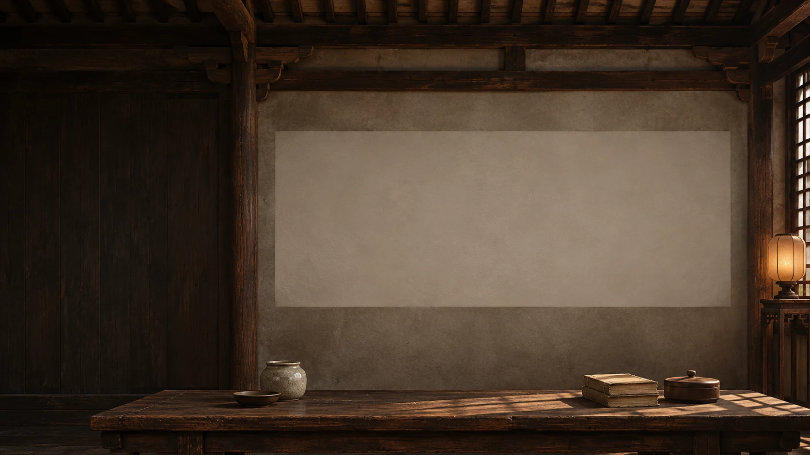

Matteo Ricci’s World Map and the Manchus
Florin-Stefan Morar
Imagined setting. Original map sources.
The film could not load. Explore the source image or read the complete essay using the links on this page.
The Map of Observing the Mysteries of the Heaven and Earth
0:00 / 15:40Silent film
Liaoning Provincial MuseumThe Xuantu, 1603 · Liaoning Provincial Museum, ShenyangOriginal imageSubtitles